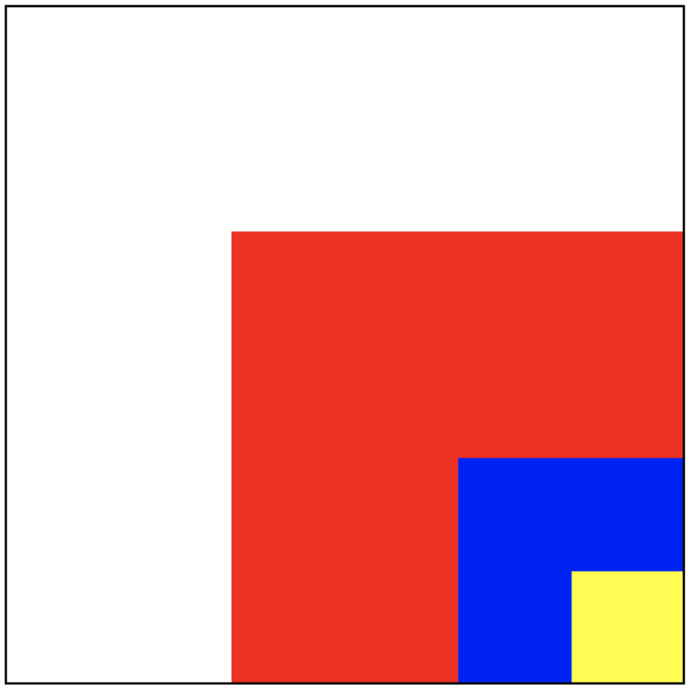

前言
本文档用于巩固 iOS 基础知识，通过问题-答案的形式总结 iOS 开发中常见的知识点，同时也是大厂面试中常考的题目。文档列出了前两个章节的答案，后面所有章节的答案均在小专栏中，整理和总结不易，欢迎到专栏中购买：
构建工具
- Visual Studio Code 书写
- mdBook 构建
- GitHub Pages 发布
- Github Actions 自动部署
Foundation
-
nil、NIL、NSNULL有什么区别？ -
struct和class的区别? -
实现
isEqual和hash方法时要注意什么？ -
自定义对象用作字典的 key 的时需要注意什么？
-
id和instancetype有什么区别？ -
typeof()和__typeof()，__typeof__()的区别? -
import和include@class的区别？ -
define和extern的区别？[ -
NSInteger的范围？32位系统和64位系统的差别？ -
imageNamed:和imageWithContentsOfFile:哪一个性能更好？为什么？ -
NSProxy和NSObject的区别？ -
NSMutableArray是线程安全的吗？如何实现一个线程安全的NSMutableArray? -
NSCache和NSMutableDictionary的区别和对比？ -
NSMutableSet和NSMutableArray的区别？ -
NSMapTable、NSHashTable、NSPointerArray在什么情况下使用？
C/C++ 基础
-
下列代码中 p 的结果是多少？
int* p = 200; p++; printf("p:%d\n", p); -
char* p = "123";和char p[] = "123";的区别？[ -
sizeof的作用？ 32 位 和 64 位 系统下sizeof(NSInteger)为多少？
Foundation
nil、NIL、NSNULL 有什么区别？
-
nil、NIL、null可以说是等价的，都代表内存中一块空地址。 -
NSNULL代表一个指向nil的对象。通常在集合中占位使用，避免crash。
struct和class的区别
- 本质区别：
class是引用类型，它在堆中分配空间，栈中保存的只是引用；struct是值类型，它在栈中分配空间。
- 使用场景：
struct有性能优势class有面向对象的扩展优势.
实现 isEqual 和 hash 方法时要注意什么?
在 iOS 中，判断两个对象内容是否相等，一般调用 isEqual 方法。用 == 来判断两个对象是否相等，其实是判断两个对象的地址是否相等。isEqual 系统默认实现是比较两个对象的指针。所以在项目中如果需要指定一套自己判断两个对象是否相同的标准的时候就需要重写isEqual。
hash 方法的存在，是因为将对象加到 NSSet 等集合中时，需要利用对象的 Hash 值来标示对象在集合中的位置，将集合查找元素的时间复杂度优化成 O(1)。对于 Hash 值，系统默认是返回该对象的内存地址。
下面是一般isEqual和hash的写法模版。
- (BOOL)isEqual:(id)object {
// 1. == 判断地址
if (self == object) return YES;
// 2. isKindOfClass 判断对象类型
if (![object isKindOfClass:[self class]]) return NO;
// 3. 进行业务逻辑判断
return [self isEqualToAnother:(Person *)object];
}
- (BOOL)isEqualToAnother:(Person *)anotherObj {
// 业务逻辑
if ([self.name isEqualToString:anotherObj.name]) {
return YES;
} else {
return NO;
}
}
- (NSUInteger)hash {
return [self.name hash] ^ [self.job hash];
}
自定义对象用作字典的 key 的时需要注意什么？
1.遵守NSCopying协议，并实现copyWithZone: 方法：字典的key需要遵守NSCopying协议，所以自定义对象作为key时，也需要遵守NSCopying协议，并实现copyWithZone方法
2.同时还需要实现 isEqual 和 hash 方法
实现：
@interface CustomDictKey : NSObject<NSCopying>
@property (nonatomic, copy) NSString *name;
@end
@implementation CustomDictKey
- (id)copyWithZone:(nullable NSZone *)zone {
CustomDictKey *aCopy = [[CustomDictKey allocWithZone:zone] init];
if (aCopy) {
aCopy.name = [self.name copyWithZone:zone];
}
return aCopy;
}
- (BOOL)isEqual:(id)other {
if (other == self) return YES;
if (![other isKindOfClass:[self class]]) return NO;
return [self isEqualToAnother:(CustomDictKey *)other];
}
- (BOOL)isEqualToAnother:(CustomDictKey *)anotherObj {
if ([self.name isEqualToString:anotherObj.name]) {
return YES;
} else {
return NO;
}
}
- (NSUInteger)hash {
return [self.name hash] ^ [self.name hash];
}
@end
使用：
CustomDictKey *keyA = [[CustomDictKey alloc] init];
keyA.name = @"keyA";
CustomDictKey *keyB = [[CustomDictKey alloc] init];
keyB.name = @"keyB";
NSMutableDictionary *dict =[NSMutableDictionary dictionary];
[dict setObject:@"testObjectA" forKey:keyA];
[dict setObject:@"testObjectB" forKey:keyB];
NSLog(@"dict: %@", dict);
// "<CustomDictKey: 0x600002e8c4c0>" = testObjectA;
// "<CustomDictKey: 0x600002e8c4f0>" = testObjectB;
NSLog(@"objA: %@", [dict objectForKey:keyA]); // objA: testObjectA
NSLog(@"objB: %@", [dict objectForKey:keyB]); // objB: testObjectB
id 和 instancetype 有什么区别？
id 和 instancetype 的区别主要为关联返回类型和非关联返回类型的区别。
关联返回类型
即方法的返回结果为所在类的类型的对象。在ObjC中，根据Cocoa的命名规则，满足下述规则的方法都为关联返回类型：
- 类方法中，以
alloc或new开头 - 实例方法中，以
autorelease，init，retain或self开头
比如:
NSArray *array = [[NSArray alloc] init];
[NSArray alloc]与[[NSArray alloc]init]返回的都为NSArray的对象
非关联返回类型
即方法的返回结果不为所在类的类型的对象。
比如:
@interface CustomObject : NSObject
+ (id)factoryMethodB;
@end
+ factoryMethodB 方法的返回值为id，可以为任意类型，所以不一定是CustomObject*类型。
instancetype 的作用
使用 instancetype 作为返回值，返回的返回结果为所在类的类型的对象，即关联返回类型。
@interface CustomObject : NSObject
+ (instancetype)factoryMethodB;
@end
id obj = [CustomObject factoryMethodB];
obj 为 CustomObject* 类型。
instancetype vs id
一个例子：
@interface CustomObject : NSObject
+ (instancetype)factoryMethodA;
+ (id)factoryMethodB;
@end
@implementation CustomObject
+ (instancetype)factoryMethodA {
return [[[self class] alloc] init];
}
+ (id)factoryMethodB {
return [[[self class] alloc] init];
}
@end
// 因为 instancetype 期望的类型是 CustomObject*，由于 CustomObject 没有 -count 方法，所以编译器会报错
NSUInteger x = [[CustomObject factoryMethodA] count];
// 因为 id 类型可以为任意的类，由于有可能 -count 方法存在于其它类中，所以编译器不会报错
NSUInteger y = [[CustomObject factoryMethodB] count];
总结
- 相同点：都可以作为方法的返回类型。
- 不同点：
instancetype可以返回和方法所在类相同类型的对象，id只能返回未知类型的对象；instancetype只能作为返回值，不能像id那样作为参数。
typeof 和 __typeof，__typeof__ 的区别?
__typeof__()和__typeof()和typeof()都是C的扩展,且意思是相同的，标准C不包括这样的运算符标准。
在标准C 中写扩展是 以 __ 开头,所以在标准C中要写成 __typeof() 或 __typeof__()。在GNU C 中支持直接写 typeof() 或者 __typeof() 或者 __typeof__()。iOS 使用Clang编译器,默认用的C语言版本是GNU99。
import 和 include @class 的区别？
在 ObjC 中，可以使用 #include 、#import、@class 三种方式引用文件。
#include
-
在C语言中，使用
#include来引用头文件。使用#include “xx.h”来引入自定义的头文件，使用#include<xx.h>来引入库中的头文件。 -
#include一般不能防止重复引用头文件，如果要防止，操作比较复杂，具体为如下方式引用：#ifndef ViewController_h #define ViewController_h #endif
#import
#import是#include的升级版，可以防止重复引入头文件这种现象的发生。#import在引入头的时候，是完全将头文件拷贝到现在的文件中，所以也有效率上的问题。- 使用
#import需要避免出现头文件递归引入的现象。（如：A引入B，B引入A，那么A、B的头文件会互相不停的拷贝）
@class
@class用来告诉编译器有这样一个类，在写代码时不会报错。 @class只是使导入的类名在引用时不受影响，不能创建该类的对象，因为创建对象时也需要访问其内部方法。- 因为
#import引入头文件有效率问题，所以当还没有调用类中方法，仅仅是定义类变量的时候，使用@class来提醒编译器，而在真正需要调用类方法的时候，再进行#import。 - 如果A是B的父类，那么这是在B.h中就必须要使用
#import来引入A的头，因为需要知道A类中有哪些变量和方法，以免B类中重复定义。 - 能使用
@class的地方尽量使用@class，延后进行#import。
define 和 extern 的区别？
-
define是宏定义，即简单的替换，不会对数据类型做校验
#define MY_HOST @"www.xxxx.com" -
extern 和常量结合使用，会分配内存空间，编译器会做类型检查
// Prefs.h extern NSString * const PREFS_MY_CONSTANT; // Prefs.m NSString * const PREFS_MY_CONSTANT = @"prefs_my_constant";
NSInteger 的范围？32位系统和64位系统的差别？
32位和64位NSInteger定义:
#if __LP64__ || 0 || NS_BUILD_32_LIKE_64
typedef long NSInteger;
typedef unsigned long NSUInteger;
#else
typedef int NSInteger;
typedef unsigned int NSUInteger;
#endif
可以看到 NSInteger 在 32 位系统上是 int 的别称，在 64 位系统上是 long 的别称。
- int占4个字节(byte) 32位(bit), 2^32 = 4294967296:
- long 占4个字节 32位 范围： -2147483648 ~ 2147483647
- long long 占8个字节 64位 范围： -9223372036854775808 ~ 9223372036854775807
32位系统
NSInteger 是 int 的别称，NSUInteger 是 unsigned int 的别称：
-
NSInteger 有正负，则范围为： -2^16 + 1 ~ 2^16
-
NSUInteger 不带符号，占4个字节，32位 范围： 0 ~ 2^32
64位系统
NSInteger 是 long 的别称，NSUInteger 是 unsigned long 的别称：
-
NSInteger 有正负： -2^32+1 ~ 2^32
-
NSUInteger 不带符号： 0 ~2^64-1
imageNamed: 和 imageWithContentsOfFile: 哪一个性能更好？为什么？
-
imageNamed:：在生成image对象的同时，会将数据根据name缓存到系统内存中，以提高该方法获取相同图片对象的性能。即使生成的对象被autoreleasePool释放了，这份缓存也不会释放。在应用中需要使用大量相同的图片时非常有用，可以提供性能和内存利用率。 -
imageWithContentsOfFile:：该方法不会进行缓存，创建的对象被autoreleasePool释放后，下次使用相同名称的图片需要重新创建。
对比总结：大量使用imageNamed:方式会在不需要缓存的地方增加额外开销CPU的时间。当需要加载一张比较大的图片并且仅作一次性使用时，没必要去缓存这个图片，使用imageWithContentsOfFile:方法会更经济。
NSProxy 和 NSObject 的区别？
NSProxy 是一个类似于 NSObject 的基类，是一等公民。NSProxy是一个抽象的超类，为充当其他对象或尚不存在的对象的代理对象定义API。通常，发送给代理的消息被转发到实际对象，或者导致代理加载（或转换为）真实对象。NSProxy的子类可用于实现透明的分布式消息传递（例如，NSDistantObject）或用于延迟实例化创建代价高昂的对象。
NSProxy 的常见用法：
- 作为中间对象解决 NSTimer 的循环引用
- 模拟多继承
NSProxy 和 NSObject 的区别：
NSProxy进行消息转发的效率更高：NSObject的消息转发流程需要经历三个步骤：从自身和 superclass 的方法列表中查找方法，找不到再进行动态方法解析以及备用接收者，最后才是完整的消息转发。NSProxy是先从自身方法中查找方法，找不到立马调用-methodSignatureForSelector:和-forwardInvocation:进行消息转发。所以在 解决timer的循环引用时基本使用NSProxy作为中间件。
NSProxy更轻量级
参考
Foundation 中的集合
NSCache 和 NSMutableDictionary 的区别和对比？
对比
-
相同：
NSCache是一种可变集合，用于临时存储在资源不足时容易被回收的 key-value 键值对。NSCache 具有字典的所有功能，并且提供的API和NSMutableDictionary都是相似的。 -
区别：
NSCache还具有如下特性：- 内存不足时，
NSCache会自动清理缓存，并且提供了是否需要清理的开关和缓存清理时的回调； NSCache是线程安全的；- 区别于
NSMutableDictionary，NSCache不需要对 key 进行拷贝。
- 内存不足时，
NSCache 的实现
-
缓存淘汰：GNUSetup 使用 LRU/LFU 机制进行淘汰，使用频率较少的元素先淘汰；Swfit Foundation 依据对象的 cost 进行淘汰，cost 较少的先淘汰。GNUSetup 中使用 maptable 存储缓存对象，使用 array 维护 LRU/LFU 排序后的对象，用于缓存淘汰；Swfit Foundation 中使用 dictionary 存储缓存对象，维护一个排序的双向链表，用于缓存淘汰。
-
线程安全：GNUSetup 中没有保证 cache 线程安全的代码；Swfit Foundation 中使用 NSLock 保证缓存读写的线程安全
NSCache 的应用
1. SDWebImage 的应用中
在 SDWebImage 中，通过将图片放到 NSCache 中，利用 NSCache 自动释放内存的特点在内存不足时自动淘汰不常用的图片。在读取图片时，先检查内存里是否有，有则直接返回；没有再从磁盘里读取。以此减少磁盘操作，保证空间合理释放。
- (nullable UIImage *)imageFromCacheForKey:(nullable NSString *)key options:(SDImageCacheOptions)options context:(nullable SDWebImageContext *)context {
// 先检查内存里是否有，有则直接返回
UIImage *image = [self imageFromMemoryCacheForKey:key];
if (image) {
return image;
}
// 再从磁盘里读取
image = [self imageFromDiskCacheForKey:key options:options context:context];
return image;
}
- (nullable UIImage *)imageFromMemoryCacheForKey:(nullable NSString *)key {
return [self.memoryCache objectForKey:key];
}
代码中 self.memoryCache 为 SDMemoryCache， SDMemoryCache 内部就是将 NSCache 扩展为了 SDMemoryCache 协议：
@protocol SDMemoryCache <NSObject>
@required
- (nonnull instancetype)initWithConfig:(nonnull SDImageCacheConfig *)config;
- (nullable id)objectForKey:(nonnull id)key;
- (void)setObject:(nullable id)object forKey:(nonnull id)key;
- (void)setObject:(nullable id)object forKey:(nonnull id)key cost:(NSUInteger)cost;
- (void)removeObjectForKey:(nonnull id)key;
- (void)removeAllObjects;
@end
@interface SDMemoryCache <KeyType, ObjectType> : NSCache <KeyType, ObjectType> <SDMemoryCache>
@property (nonatomic, strong, nonnull, readonly) SDImageCacheConfig *config;
@end
NSMutableSet 和 NSMutableArray 的区别？
-
是否有序：
NSMutableSet中的元素是无序的，NSMutableArray则是有序的 -
元素是否重复：
NSMutableSet中不会存在重复元素，NSMutableArray则可以存在重复元素 -
查找的复杂度：搜索一个元素时
NSMutableSet比NSMutableArray效率高，主要是它用到了 hash 算法。 比如你要存储元素A，一个 hash 算法直接就能直接找到A应该存储的位置；同样，当你要访问A时，一个hash过程就能找到A存储的位置。而对于NSArray，若想知道A到底在不在数组中，则需要遍历整个数组，显然效率较低了；[set containsObject:@"C++"]; [array containsObject:@"C++"]; -
使用场景：
NSSet/NSMutableSet：不需要保证顺序的集合、去重、经常查询元素NSArray/NSMutableArray: 需要保证顺序、有重复元素
-
实现原理：
NSSet/NSMutableSet：
NSMapTable 、 NSHashTable 、 NSPointerArray
iOS 中，常见的强持有元素的集合为：NSArray 、NSDictionary 、NSSet，同时也提供了弱引用元素的集合：NSMapTable、NSHashTable 、 NSPointerArray等，当不需要集合强持有里面的元素是，可以使用。
使用场景举例：
- 比如有一个数组，数组里面存放了 100 个 view，每隔 10 分钟就会遍历这个数组，然后将这些 view 的 backgroundColor 改变。但是这个数组是输出给其它业务方使用的，也无妨拿到其中的某个 view，在进行一些操作后，就会
removeFromSuperView
问题：
- view
removeFromSuperView后，数组中的 view 会释放吗？
答案：不会，因为数组对里面的对象是强引用的，数组还持有这个 view，所以不会释放。
- 因为 view 不会释放，所以每次遍历的时候虽然有些 view 已经需要了，但是还存在，影响着性能，怎么解决？
答案：目的就是做到当 view removeFromSuperView 后就释放，不释放的根本原因就是因为数组强引用着 view，那么可以从这里入手，让数组不强持有这个view。这里可以使用 NSPointerArray`。
参考
C/C++
指针运算
下列代码中 p 的结果是多少？
int* p = 200;
p++;
printf("p:%d\n", p);
答案：204
原因：当一个加法运算，加号左边的操作数是一个指针，而右边的操作数是一个整数时，这个整数值先乘以指针类型的大小（sizeof(int)），然后再加到左边的数上。如果是 double，则为 8，char 为 1。
扩展：当同一个数组的两个成员的指针相减时，其差值为：地址值的差，再除以一个数组成员的size。这个结果代表了两个指针对应元素的下标之差。
char* p = "123"; 和 char p[] = "123"; 的区别？
答案：
char* p是一个"123"的指针，存储的是123字符数组，printf("p:%s\n", p);可输出其内容；char p[]是一个 char 数组，存放了123字符，printf("p:%s\n", p);可输出其内容。
sizeof 的作用？ 32 位 和 64 位 系统下 sizeof(NSInteger) 为多少？
sizeof 不是一个函数，而是一个运算符。根据数据的类型计算其占用的字节数，sizeof 传入的其实是一个变量，在编译的时候就确定了：
int age = 10000;
sizeof(age);
// 等价于
sizeof(int);
NSInteger 在 32 和 64 位系统上表现不同：
- 32位系统，NSInteger 是 int 的别称
- 64位系统，NSInteger 是 long 的别称
#if __LP64__ || 0 || NS_BUILD_32_LIKE_64
typedef long NSInteger;
typedef unsigned long NSUInteger;
#else
typedef int NSInteger;
typedef unsigned int NSUInteger;
#endif
- 32 位系统中，NSInteger 占 4 个字节，所以
sizeof(NSInteger)= 4 - 64 位系统中，NSInteger 占 8 个字节，所以
sizeof(NSInteger)= 8
同样 CGFloat 的实现类似：
- 32位系统，CGFloat 是 float 的别称， 占用 4 字节
- 64位系统，CGFloat 是 double 的别称， 占用 8 字节
typedef CGFLOAT_TYPE CGFloat;
#if defined(__LP64__) && __LP64__
# define CGFLOAT_TYPE double
#else
# define CGFLOAT_TYPE float
#endif
各种类型的数据占用的字节数量：
- BOOL：1
- int：4
- long: 8
- float: 4
NSLog(@"%ld", sizeof(float)); // 8 - double: 8
NSLog(@"%ld", sizeof(double)); // 8 - 指针: 8
char *p = 200; NSLog(@"%ld", sizeof(p)); // 8
UIKit
-
UIView和CALayer是什么关系？有何区别？ -
frame和bounds的区别? -
loadView方法的作用？ -
UIButton的父类是什么？UILabel的父类又是什么？ -
UITableView的继承关系？一直到NSObject -
UIViewController的生命周期？ -
UIView的生命周期？ -
UIViewController一旦收到内存警告会如何处理？ -
setNeedsDisplay和layoutIfNeeded两者是什么关系？
动画和渲染
-
有哪些绘制圆角的方案？不同方式的GPU、CPU占用分别怎么样的？
-
讲讲 CAlayer 的渲染树？
-
iOS中有哪些动画方式？
-
UIView 的 Animation 和 Core Animation 有什么区别？
-
隐式动画是什么？如何关闭？
-
UIView 的 animate.. block方式执行动画，是隐式动画吗？
-
UIView 在执行动画的过程中如何响应事件？
Responder Chain
-
说一说事件传递和响应者链。
-
UIView 哪些情况下不能接收触摸事件？
-
扩大按钮响应区域的方法有哪些？
-
手势冲突如何处理？
APP
- APP 的生命周期？
算法
-
找出两个
UIView的最近的公共父View，如果不存在，则输出 nil。 -
实现
convertRect: toView:方法？
UIKit
UIView 和 CALayer 是什么关系？有何区别？
-
UIView是对CALayer的封装。UIView和CALayer的相似行为都依赖于CALayer的实现。 -
CALayer继承自NSObject，不能够响应事件。 -
UIView继承自UIReponder，负责响应事件。 -
UIView依赖于CALayer得以显示。无论是修改了 layer 的可视内容或是几何信息，view 都会跟着变化，反之也是如此，比如下列代码:UIView *view = [[UIView alloc] initWithFrame:CGRectMake(100, 100, 100, 100)]; view.backgroundColor = [UIColor redColor]; // 1. 修改 layer 的颜色 view.layer.backgroundColor = [[UIColor blueColor] CGColor]; // view 将显示呈蓝色 NSLog(@"view color: %@", view.backgroundColor); // view color: 0 0 1 1 NSLog(@"layer color: %@", view.layer.backgroundColor); // layer color: 0 0 1 1 // 2. 修改 layer 的位置 view.layer.frame = CGRectMake(100, 200, 100, 100); NSLog(@"view y: %f", view.frame.origin.y); // view y: 200.000000 NSLog(@"layer y: %f", view.layer.frame.origin.y); // layer y: 200.000000 [self.view addSubview:view];
为什么需求分离UIView和CALayer
主要是基于两点考虑：
- 职责不同：
UIVIew的主要职责是负责接收并响应事件；而CALayer的主要职责是负责显示 UI。 - 需要复用：在 macOS 和 App 系统上，
NSView和UIView虽然行为相似，在实现上却有着显著的区别，却又都依赖于CALayer。在这种情况下，只能封装一个CALayer出来。
frame 和 bounds 的区别?
-
frame: 表示
view在父view坐标系统中的位置和大小，参照点是父视图的坐标系统。 -
bounds: 表示
view在本地坐标系统中的位置和大小，参照点是本地坐标系统。
loadView 方法的作用？
- 作用：用来创建
UIViewController的view。每个UIViewController都有一个loadView方法。 - 调用时机：每次访问
UIViewController的view(比如controller.view、self.view)而且view为nil时，loadView方法就会被调用。 - 默认实现：
loadView的默认实现在[super loadView]中：- 查找与
UIViewController相关联的xib文件，通过加载xib文件来创建UIViewController的view。如果在初始化UIViewController的时候指定了xib文件名，那么就会根据传入的xib文件名去加载对于的xib文件，如果没有明显的传入xib文件名，就会加载跟UIViewController同名的xib文件。 - 如果没有找到相关联的xib文件，就会创建一个空白的
UIView,然后赋值给UIViewController的view属性。
- 查找与
- 正确使用：用来自定义
UIViewController的view，可以在上面进行一些自定义设置。重写loadView方法，并且不需要调用[super loadView]。
- (void)loadView {
UIView *customView = [[UIView alloc] initWithFrame:[UIScreen mainScreen].bounds];
self.view = customView;
}
UIButton 的父类是什么？UILabel 的父类又是什么？
UIButton->UIControl->UIView->UIResponderUILabel->UIView->UIResponder
UIControl 实际上是针对点击触摸进行进一步的封装，可以方便得为点击等添加对应的action。继承自UIControl的控件包括
UIButton，UIDatePicker，UIPageControl，UISegmentedControl，UITextField，UISwitch，UISlider等，其它控件则直接继承自 UIView。
UITableView 的继承关系？
UITableView -> UIScrollView -> UIView -> UIResponder -> NSObject
UIViewController 的生命周期
-[ViewController init]
-[ViewController loadView]
-[ViewController viewDidLoad]
-[ViewController viewWillAppear:]
-[ViewController viewWillLayoutSubviews]
-[ViewController viewDidLayoutSubviews]
-[ViewController viewDidAppear:]
-[ViewController viewWillDisappear:]
-[ViewController viewDidDisappear:]
-[ViewController dealloc]

UIView 的生命周期
view层级操作
- (void)addSubview:(UIView *)view;
- (void)didAddSubview:(UIView *)subview;
- (void)willRemoveSubview:(UIView *)subview;
- (void)willMoveToSuperview:(nullable UIView *)newSuperview;
- (void)didMoveToSuperview;
- (void)willMoveToWindow:(nullable UIWindow *)newWindow;
- (void)didMoveToWindow;
- (void)removeFromSuperview;
view布局操作
- (void)layoutSubviews;
- (void)setNeedsLayout;
- (void)layoutIfNeeded;
UIView生命周期
init->willMoveToSuperview->didMoveSuperview->(如果有子view)->subview的willMoveToSuperview->subview的didMoveSuperview->didAddSubview->addSubview-viewWillAppear->loadViewIfNeeded->willMoveToWindow->(如果有子view)->subview的willMoveToWindow->subview的didMoveToWindow->didMoveToWindow->viewWillLayoutSubviews->viewDidLayoutSubviews->layoutSubviews->drawRect->viewDidAppear
UIViewController一旦收到内存警告会如何处理？
当系统内存告急时， ViewController 会接收 didReceiveMemoryWarning :首先会判断当前的 ViewController 是否还显示在 window 上，如果不在就会移除当前的 ViewController，销毁ViewController 上面的子控件，并执行 ViewDidUnload 方法。
setNeedsDisplay 和 layoutIfNeeded 两者是什么关系？
-
setNeedsDisplay是给当前的视图做了标记。 -
layoutIfNeeded查找是否有标记，如果有标记及立刻刷新。
只有这二者合起来使用，才会起到立刻刷新的效果。
动画和渲染
有哪些绘制圆角的方案？不同方式的GPU、CPU占用分别怎么样的？
主要有以下 4 种：
- 设置 layer 的 cornerRadius
- 用贝塞尔曲线
UIBezierPath作 mask 圆角 - 使用 CoreGraphics 重新绘制圆角
- 混合图层，用一张镂空的透明图片作遮罩
1. 设置 layer 的 cornerRadius
view.layer.masksToBounds = YES;
view.layer.cornerRadius = 10.f;
2. 用贝塞尔曲线 UIBezierPath 作 mask 圆角
CAShapeLayer + UIBezierPath:
CAShapeLayer *layer = [CAShapeLayer layer];
UIBezierPath *aPath = [UIBezierPath bezierPathWithOvalInRect:view.bounds];
layer.path = aPath.CGPath;
view.layer.mask = layer;
3. 使用 CoreGraphics 重新绘制圆角
使用 CoreGraphics 绘制圆角：
@implementation UIImage (RoundedCorner)
- (UIImage *)drawCircleImage {
CGFloat side = MIN(self.size.width, self.size.height);
UIGraphicsBeginImageContextWithOptions(CGSizeMake(side, side), false, [UIScreen mainScreen].scale);
CGContextAddPath(UIGraphicsGetCurrentContext(),
[UIBezierPath bezierPathWithOvalInRect:CGRectMake(0, 0, side, side)].CGPath);
CGContextClip(UIGraphicsGetCurrentContext());
CGFloat marginX = -(self.size.width - side) / 2.f;
CGFloat marginY = -(self.size.height - side) / 2.f;
[self drawInRect:CGRectMake(marginX, marginY, self.size.width, self.size.height)];
CGContextDrawPath(UIGraphicsGetCurrentContext(), kCGPathFillStroke);
UIImage *output = UIGraphicsGetImageFromCurrentImageContext();
UIGraphicsEndImageContext();
return output;
}
@end
dispatch_async(dispatch_get_global_queue(DISPATCH_QUEUE_PRIORITY_DEFAULT, 0), ^{
UIImage *image = view.image;
image = [image drawCircleImage];
dispatch_async(dispatch_get_main_queue(), ^{
view.image = image;
});
});
4. 混合图层，用一张镂空的透明图片作遮罩
UIView *parent = [view superview];
UIImageView *cover = [[UIImageView alloc] initWithFrame:CGRectMake(0, 0, imgSize.width, imgSize.height)];
cover.image = [UIImage imageNamed:@"cover"];
[parent addSubview:cover];
cover.center = view.center;
对比总结
-
方法1 设置 layer 的 cornerRadius 的方式设置简单，苹果在 iOS9 上进行了优化，不再需要离屏渲染，性能差别不明显，简单圆角场景下推荐使用；
-
方法2 用贝塞尔曲线
UIBezierPath作 mask 圆角，使用了矢量并与位图叠加，导致运算量上升，GPU运算量高； -
方法3 使用 CoreGraphics 重新绘制圆角，基于单张位图运算，比方法2要好，适合位图尺寸很大，数量很多的情况下使用。但要注意内存警告，最好配合缓存机制使用，避免因内存溢出而崩溃；
-
方法4 混合图层，用一张镂空的透明图片作遮罩，基于透明位图，可用于异形遮罩，但需要根据图片大小做多张特殊位图，不是很方便。
iOS中的动画方式
-
核心动画 Core Animation
-
UIView 动画
UIView 的 Animation 和 Core Animation 有什么区别？
-
区别：
- 核心动画只能添加到 CALayer(图层)，所以不能响应事件
- 核心动画一切都是假象，并不会改变真实的值;
-
使用场景：
- 如果需要与用户交互就使用 UIView 的动画;不需要与用户交互可以使用核心动画;
-
Core Animation 使用较多的场景：
- 在转场动画中,核心动画的类型比较多;
- 根据一个路径做动画,只能用核心动画（帧动画）;
- 动画组: 同时做多个动画;
隐式动画
如果一个 CALayer 对象对应着 UIView，则称这个 Layer 是一个 Root Layer, 非 Root Layer 一般是通过 CALayer 或者其子类直接创建的。所有的非 Root Layer 在设置 Amimation Properties 的时候都存在隐式动画，默认的 duration 是0.25秒。
如何关闭隐式动画？
可以通过动画事务 CATransaction 进行关闭。
事务（transaction）实际上是Core Animation用来包含一系列属性动画集合的机制，用指定事务去改变可以做动画的图层属性，不会立刻发生变化，而是提交事务时用一个动画过渡到新值。任何 Layer 的可动画属性的设置都属于某个 CATransaction，事务的作用是为了保证多个属性的变化同时进行。事务可以嵌套，当事务嵌套时候，只有最外层的事务 commit 之后，整个动画才开始。
[CATransaction begin];
[CATransaction setDisableActions:YES];
// 有隐式动画的逻辑
[CATransaction commit];
UIView 在执行动画的过程中如何响应事件？
UIView 在执行动画的过程中，view 的 frame 只改变的一次，直接改到了最终的frame。比如下面代码，block 中的代码只会调用一次：
[UIView animateWithDuration:2 animations:^{
CGFloat Y = self.animationView.frame.origin.y + 50;
self.animationView.frame = CGRectMake(self.animationView.frame.origin.x, Y, 100, 100);
} completion:^(BOOL finished) {
}];
并且，UIView 在执行动画的过程中不会响应事件。
想要响应事件可以通过UIView 的 touchesBegan: 方法中判断，有两种方法：
- 通过 CALayer 的 presentationLayer 来访问对应的呈现树图层，presentationLayer 会动画不断变化，判断触发事件的点是否在 presentationLayer 上即可
- 直接调用 CALayer 的
hitTest:方法
比如下面的代码中，需要在 animationView 执行动画的过程中响应 viweTapAction 事件
@interface ViewController ()
@property (nonatomic, strong) UIView *animationView; // 做动画的 view
@end
@implementation ViewController
- (void)viewDidLoad {
[super viewDidLoad];
self.animationView = [[UIView alloc] initWithFrame:CGRectMake(100, 100, 100, 100)];
self.animationView.backgroundColor = [UIColor redColor];
[self.view addSubview:self.animationView];
self.animationView.userInteractionEnabled = NO;
}
// 执行动画
- (void)viewAnimationAction {
// uiview animation 是隐式动画
// animation 动画过程中不会响应事件
[UIView animateWithDuration:2 animations:^{
CGFloat Y = self.animationView.frame.origin.y + 50;
self.animationView.frame = CGRectMake(self.animationView.frame.origin.x, Y, 100, 100);
} completion:^(BOOL finished) {
}];
}
// 点击事件，改变 view 的背景色
- (void)viweTapAction {
self.animationView.backgroundColor = [UIColor colorWithRed:(arc4random()%255)/ 255.f green:(arc4random()%255)/ 255.f blue:(arc4random()%255)/ 255.f alpha:1];
}
@end
方法1:
- (void)touchesBegan:(NSSet<UITouch *> *)touches withEvent:(UIEvent *)event {
// 获取到点击的位置
UITouch *touch = touches.anyObject;
CGPoint point = [touch locationInView:self.view];
// 判断 redView.layer.presentationLayer 是否包含这个点
if (CGRectContainsPoint(self.animationView.layer.presentationLayer.frame, point)) {
[self viweTapAction]; // 响应事件
}
}
方法2:
- (void)touchesBegan:(NSSet<UITouch *> *)touches withEvent:(UIEvent *)event {
// 获取到点击的位置
UITouch *touch = touches.anyObject;
CGPoint point = [touch locationInView:self.view];
if ([self.animationView.layer.presentationLayer hitTest:point] != nil) {
[self viweTapAction]; // 响应事件
}
}
参考
iOS 中的事件传递和响应者链

事件的生命周期大概为三个阶段：
- 事件的产生
- 事件的传递
- 事件的响应
事件的产生
苹果注册了一个 Source1 (基于 mach port 的) 用来接收系统事件，其回调函数为 __IOHIDEventSystemClientQueueCallback()。
当一个硬件事件(触摸/锁屏/摇晃等)发生后，首先由 IOKit.framework 生成一个 IOHIDEvent 事件并由 SpringBoard 接收。这个过程的详细情况可以参考这里。SpringBoard 只接收按键(锁屏/静音等)，触摸，加速，接近传感器等几种 Event，随后用 mach port 转发给需要的App进程。随后苹果注册的那个 Source1 就会触发回调，并调用 _UIApplicationHandleEventQueue() 进行应用内部的分发。
_UIApplicationHandleEventQueue() 会把 IOHIDEvent 处理并包装成 UIEvent 进行处理或分发，其中包括识别 UIGesture/处理屏幕旋转/发送给 UIWindow 等。通常事件比如 UIButton 点击、touchesBegin/Move/End/Cancel 事件都是在这个回调中完成的。
事件的分类
iOS中的事件可以分为3大类型：
- 触摸事件
- 加速计事件
- 远程控制事件
这里是关注触摸事件。
在iOS中，并不是任何对象都能处理事件，只有继承了UIResponder的对象才能接受并处理事件，比如：
- UIApplication
- UIViewController
- UIView
在UIResponder中提供了以下方法来处理触摸事件：
- (void)touchesBegan:(NSSet *)touches withEvent:(UIEvent *)event;
- (void)touchesMoved:(NSSet *)touches withEvent:(UIEvent *)event;
- (void)touchesEnded:(NSSet *)touches withEvent:(UIEvent *)event;
- (void)touchesCancelled:(NSSet *)touches withEvent:(UIEvent *)event;
对于触摸事件，iOS中提供了UITouch对象对象，其作为用：
- 保存着跟手指相关的信息，比如触摸的位置、时间、阶段
- 当手指移动时，系统会更新同一个UITouch对象，使之能够一直保存该手指在的触摸位置
- 当手指离开屏幕时，系统会销毁相应的UITouch对象
比如在UIView的几个touch方法中，就是将UITouch作为参数传递进去的：
- (void)touchesBegan:(NSSet *)touches withEvent:(UIEvent *)event
- (void)touchesMoved:(NSSet *)touches withEvent:(UIEvent *)event
- (void)touchesEnded:(NSSet *)touches withEvent:(UIEvent *)event
- (void)touchesCancelled:(NSSet *)touches withEvent:(UIEvent *)event
UITouch的产生为：
当用户用一根手指触摸屏幕时，会创建一个与手指相关的UITouch对象，并且一根手指对应一个UITouch对象。如果两根手指同时触摸一个view，那么view只会调用一次touchesBegan:withEvent:方法，touches参数中装着2个UITouch对象；如果这两根手指一前一后分开触摸同一个view，那么view会分别调用2次touchesBegan:withEvent:方法，并且每次调用时的touches参数中只包含一个UITouch对象。
事件的传递
- 发生触摸事件后，系统会将该事件加入到一个由UIApplication管理的事件队列中。
- 然后UIApplication会从事件队列中取出最前面的事件，并将事件分发下去以便处理，通常，先发送事件给应用程序的主窗口（keyWindow）。
- 主窗口keyWindow会在视图层次结构中找到一个最合适的视图来处理触摸事件，这也是整个事件处理过程的第一步。
找到合适的视图控件后，就会调用视图控件的touches方法来作具体的事件处理。
也就是说，触摸事件的传递是从父控件传递到子控件，即UIApplication->window->寻找处理事件最合适的view的一个过程。
寻找合适的控件来处理事件
- 首先判断主窗口（keyWindow）自己是否能接受触摸事件
- 判断触摸点是否在自己身上
- 子控件数组中从后往前遍历子控件，重复前面的两个步骤
- 找到view，比如叫做fitView，那么会把这个事件交给这个fitView，再遍历这个fitView的子控件，直至没有更合适的view为止。
- 如果没有符合条件的子控件，那么就认为自己最合适处理这个事件。
比如下面的四个View：白色、红色、蓝色、黄色，其中白色view是UIViewController的view，点击黄色view事件的传递过程为：
UIApplication -> UIWindow -> 白色view（UIViewController的view） -> 红色view -> 蓝色view -> 黄色view

找到合适的控件依赖于hitTest:withEvent:和pointInside:withEvent:两个方法：
// recursively calls -pointInside:withEvent:. point is in the receiver's coordinate system
- (nullable UIView *)hitTest:(CGPoint)point withEvent:(nullable UIEvent *)event;
// default returns YES if point is in bounds
- (BOOL)pointInside:(CGPoint)point withEvent:(nullable UIEvent *)event;
hitTest:withEvent: 方法
- 作用：寻找并返回最合适的view。
- 调用时机：只要事件一传递给一个控件,这个控件就会调用他自己的hitTest：withEvent：方法。不管这个控件能不能处理事件，也不管触摸点在不在这个控件上，事件都会先传递给这个控件，随后再调用hitTest:withEvent:方法
- (UIView *)hitTest:(CGPoint)point withEvent:(UIEvent *)event{
// 1. 判断能否接收事件
if (self.userInteractionEnabled == NO || self.hidden == YES || self.alpha <= 0.01) return nil;
// 2. 判断触摸点是否在自身上
if ([self pointInside:point withEvent:event] == NO) return nil;
// 3. 从后往前遍历子控件数组
for (int i = (int)self.subviews.count - 1; i >= 0; i--) {
UIView *childView = self.subviews[i];
// 坐标系的转换, 把窗口上的点转换为子控件上的点
CGPoint childP = [self convertPoint:point toView:childView];
UIView *fitView = [childView hitTest:childP withEvent:event];
if (fitView) { // 如果能找到最合适的view
return fitView;
}
}
// 4. 没有找到更合适的view，自己作为最合适处理这个事件的view。
return self;
}

pointInside:withEvent: 方法
pointInside:withEvent:方法判断点在不在当前view上（方法调用者的坐标系上）如果返回YES，代表点在方法调用者的坐标系上;返回NO代表点不在方法调用者的坐标系上，那么方法调用者也就不能处理事件。
事件的响应
事件从UIApplication->UIWindow->寻找处理事件最合适的view传递后，就会调用控件的touches方法来作具体的事件处touchesBegan…touchesMoved…touchedEnded…等。touches 方法就是对事件的响应，事件的响应是顺着响应链向上传递的，这个传递是依赖于UIResponder的nextResponder：
- UIView ：如果view是VC的root view，则它的nextResponder是 VC；否则是父view
- UIViewController ：如果 vc 是window的root vc，则它的nextResponder是 window，否则是父vc
- UIWindow：它的nextResponder是UIApplication
- UIApplication ：它的nextResponder是app delegate。
所以整个事件在找到合适的view之后，判断当前view是否能处理这个事件，如果不能，则顺着nextResponder向父view传递，如果传递到VC也不能处理这个事件，则继续传递到UIWindow，如果window对象也不处理，则其将事件或消息传递给UIApplication对象，如果UIApplication也不能处理该事件或消息，则将其丢弃。其中任何一环能处理事件，则进行时间处理，整个事件的传递就结束了。

总结
事件处理的整个流程总结：
- 触摸屏幕产生触摸事件后，触摸事件会被添加到由UIApplication管理的事件队列中（即，首先接收到事件的是UIApplication）。
- UIApplication会从事件队列中取出最前面的事件，把事件传递给应用程序的主窗口（keyWindow）。
- key window会在视图层次结构中找到一个最合适的视图来处理触摸事件。（至此，第一步已完成)
- 最合适的view会调用自己的touches方法处理事件
- touches默认做法是把事件顺着响应者链条向上抛，即顺着nextResponder向上传递。
事件的传递和响应的区别：
事件的传递是从上到下（父控件到子控件），事件的响应是从下到上（顺着响应者链条向上传递：子控件到父控件。
应用
1. 扩大按钮的响应区域
pointInside:withEvent:方法可以判断事件的点是否在当前view上，则可以重写该方法，扩大响应区域。有两种方式：
- 继承自 UIButton 重写该方法
- 使用分类，在分类中重写该方法。（不建议，因为分类会覆盖本类的实现）
代码可参考
另外，不建议重写hitTest:withEvent:，因为会阻断事件的传递，比如上面的代码改成这样，并且把红色的button扩大较大的热区，则蓝色的button就不能响应事件：
- (UIView *)hitTest:(CGPoint)point withEvent:(UIEvent *)event {
CGRect rect = [self enlargedRect];
if (CGRectContainsPoint(rect, point)) {
return self;
}
return nil;
}

2. 自定事件响应机制
1.有一个viewA，viewA有一个subView叫做viewB，要求触摸viewB时,viewB会响应事件，而触摸viewA本身，不会响应该事件。如何实现？
在父View，即viewA中的hitTest:方法中，将自己从合适的view中去除：
- (UIView *)hitTest:(CGPoint)point withEvent:(UIEvent *)event{
UIView *view = [super hitTest:point withEvent:event];
if (view == self) {
return nil;
}
return view;
}
2.一个事件多个对象处理
利用 touchs 方法，自己先响应事件，再向上传递
- (void)touchesBegan:(NSSet *)touches withEvent:(UIEvent *)event{
// 1.自己先处理事件...
NSLog(@"do somthing...");
// 2.再调用系统的默认做法，再把事件交给上一个响应者处理
[super touchesBegan:touches withEvent:event];
}
UIView 哪些情况下不能接收触摸事件?
有三种情况：
userInteractionEnabled为NO- 隐藏，即
hidden为YES alpha <= 0.01
扩大按钮响应区域的方法有哪些？
-
在 button 上面盖一个蒙层，用蒙层做事件响应
-
重写 UIButton 的
pointInside:withEvent:方法，扩大响应区域，或者重写hitTest:withEvent:，但不建议，以为会阻断事件的传递。具体见iOS 中的事件传递和响应者链
手势冲突如何处理？
1.修改响应优先级
UIGestureRecognizer类中有两个方法
// 让自身这个手势事件响应优先级低于其它手势事件
// 只是在对于比它响应优先级低的手势调用
- (BOOL)gestureRecognizer:(UIGestureRecognizer *)gestureRecognizer shouldBeRequiredToFailByGestureRecognizer:(UIGestureRecognizer *)otherGestureRecognizer {
return YES;
}
// 让自身这个手势事件响应优先级高于其它手势事件
// 只是在对于比它响应优先级高的手势调用
- (BOOL)gestureRecognizer:(UIGestureRecognizer *)gestureRecognizer shouldRequireFailureOfGestureRecognizer:(UIGestureRecognizer *)otherGestureRecognizer {
return YES;
}
2.同时响应
// 共存 A手势或者B手势 代理方法里shouldRecognizeSimultaneouslyWithGestureRecognizer 有一个是返回YES，就能共存
- (BOOL)gestureRecognizer:(UIGestureRecognizer *)gestureRecognizer shouldRecognizeSimultaneouslyWithGestureRecognizer:(UIGestureRecognizer *)otherGestureRecognizer {
return YES;
}
参考
APP
APP 的生命周期
iOS APP 的生命周期包含以下阶段：
- Not running（未运行状态）：app未启动或者被终止（无论是被系统还是用户）。
- Inactive（不活跃状态）：app在前台运行但未接收事件。app只在转换到不同状态时会短暂地保持此状态。进入此状态后，app会很快进入后台（Background）或活动（Active）状态。（打电话时或者下拉通知栏时app会进入此状态）
- Active（活动状态）：app在前台运行并且正在接收事件。处于前台的app通常状态就是Active。
- Background（后台状态）：app在屏幕上不可见但是正在执行代码，这是后台状态。当用户退出应用后（应该是按home键），系统会将app在挂起（suspend）前短暂地移动到后台（Background）状态。
- Suspended（挂起状态）：应用程序在内存中，但不执行代码。系统会挂起在后台（Background）状态的应用程序。系统可能会为了腾出内存空间，将app清除出内存。

UIApplication 提供了对APP的状态管理，可以从其 UIApplicationDelegate 中处理生命周期各个阶段的需要执行的业务，同时也有相应的通知。
生命周期各阶段
-
APP 启动
iOS APP的入口为mina函数：
int main(int argc, char * argv[]) { NSString * appDelegateClassName; @autoreleasepool { // Setup code that might create autoreleased objects goes here. appDelegateClassName = NSStringFromClass([AppDelegate class]); } return UIApplicationMain(argc, argv, nil, appDelegateClassName); }main函数执行并返回一个 UIApplicationMain 函数。UIApplicationMain 中会创建一个 UIApplication 的实例，是一个单例，可以通过
[UIApplication sharedApplication]访问。主线程的 runloop 也是从 main 函数这里开始的：UIApplicationMian中创建了一个和主线程对应的runloop，一直处于消息处理和休息等待的循环，一直到app退出。 -
APP 启动完成 FinishLaunching
- (BOOL)application:(UIApplication *)application didFinishLaunchingWithOptions:(NSDictionary *)launchOptions { // Override point for customization after application launch. return YES; } // 对应通知 UIKIT_EXTERN NSNotificationName const UIApplicationDidFinishLaunchingNotification; -
程序由后台转入前台:前台是指app为当前手机展示. app首次启动时不会调用该方法
- (void)applicationWillEnterForeground:(UIApplication *)application; // 对应通知 UIKIT_EXTERN NSNotificationName const UIApplicationWillEnterForegroundNotification; -
程序进入活跃状态 该方法app首次进入就会调用, 由后台转入前台, 也会在
applicationWillEnterForeground方法之后调用- (void)applicationDidBecomeActive:(UIApplication *)application; // 对应通知 UIKIT_EXTERN NSNotificationName const UIApplicationDidBecomeActiveNotification; -
程序进入非活跃状态 比如有电话进来或者锁屏等情况, 此时应用会先进入非活跃状态, 也有可能是程序即将进入后台(进入后台前会先调用)
- (void)applicationWillResignActive:(UIApplication *)application; // 对应通知 UIKIT_EXTERN NSNotificationName const UIApplicationWillResignActiveNotification; -
程序进入后台
- (void)applicationDidEnterBackground:(UIApplication *)application; // 对应通知 UIKIT_EXTERN NSNotificationName const UIApplicationDidEnterBackgroundNotification;当程序进入后台，很快便会就如挂起状态，在挂起状态下，无法执行任何代码。等到系统内存告急时会被杀死，如果有未完成的任务，可以在该方法下申请延时180s执行代码.
__block UIBackgroundTaskIdentifier backTaskId; backTaskId = [application beginBackgroundTaskWithExpirationHandler:^{ NSLog(@"backgroundTask reaches 0"); [application endBackgroundTask:backTaskId]; backTaskId = UIBackgroundTaskInvalid; }]; -
程序即将退出
- (void)applicationWillTerminate:(UIApplication *)application; // 对应通知 UIKIT_EXTERN NSNotificationName const UIApplicationWillTerminateNotification;
UIKit 相关算法
1. 找出两个 UIView 的最近的公共父 View，如果不存在，则输出 nil。
如果是在不同的Window上，则没有公共父 view。
- 思路：1. 用 set 保存 view1 的所有父view，再遍历 view2 的父view，如果set中有，则为最近父view
- 复杂度：时间 O(n)， set查找的复杂度为O(1)，空间 O(n)
- (UIView *)commonSuperViewFromView1:(UIView *)view1 view2:(UIView *)viwe2 {
NSSet *view1SuperViews = [self superViews:view1];
while (viwe2 != nil) {
if ([view1SuperViews containsObject:viwe2]) return viwe2;
viwe2 = [viwe2 superview];
}
return nil;
}
- (NSSet *)superViews:(UIView *)view {
if (!view) return nil;
NSMutableSet *set = [NSMutableSet set];
while (view != nil) {
[set addObject:view];
view = [view superview];
}
return [set copy];
}
内存基础知识
-
内存中的5大区分别是什么？
-
堆区和栈区的区别？
-
说一下什么是悬垂指针？什么是野指针?
-
BAD_ACCESS在什么情况下出现? -
什么是深拷贝？什么是浅拷贝？
-
copy 和 mutableCopy 的区别？
iOS 内存管理策略
-
iOS 内存管理有哪些关键字，说一下对这些关键字的理解？
-
assign修饰对象会有什么问题？ -
weak和assign的区别？ -
weak的实现原理？ -
delegate 为何要用
weak修饰? -
block属性为什么需要用copy来修饰？ -
内存管理默认的关键字是什么？
-
nil 和 release 的区别？
-
为什么不要在初始化方法和 dealloc 中使用访问器方法(setter 和 getter)？
-
ObjC 对象在 dealloc 中会做些什么事情？
-
NSString使用strong可以吗？NSArray呢？ -
NSNumber、NSString、NSDate的内存管理? 或者说 Tagged Pointer。 -
iOS 中哪些情况会导致循环引用？如何检测？
ARC
-
ARC 内存管理的原则？
-
使用自动引用数ARC应该遵循的原则?
-
ARC 的
retainCount怎么存储的？ -
ARC 在编译时做了哪些工作？在运行时做了哪些工作？
AutoreleasePool
-
简要说一下
@autoreleasepool的数据结构？ -
@autoreleasepool的释放时机？ -
@autoreleasepool与NSThread、NSRunLoop的关系? -
什么场景需要手动添加
@autoreleasepool？ -
autorelease对象什么时候释放？ -
访问
__weak修饰的变量，是否已经被注册在了@autoreleasePool中？为什么？ -
为什么已经有了 ARC ,但还是需要
@autoreleasepool的存在？ -
方法或函数返回一个对象时，会对对象
autorelease么？为什么？
Objective-C 对象
-
一个 NSObject 对象占用多少内存？
-
ObjC 中有几种类型的对象？
-
对象的
isa指针指向哪里？ -
ObjC 的类信息存放在哪里？
-
Selector, Method 和 IMP 的区别与联系？
-
为什么需要在初始化方法中调用
self = [super init]？ -
下面的代码输出什么？
@implementation Son : Father - (id)init { self = [super init]; if (self) { NSLog(@"%@", NSStringFromClass([self class])); NSLog(@"%@", NSStringFromClass([super class])); } return self; } @end
Category
-
Category 的使用场合是什么？
-
Category 的实现原理
-
Category 在编译过后，是在什么时机与原有的类合并到一起的?
-
Category 和 Class Extension 的区别是什么？
-
Category 中有 load 方法吗？load 方法是什么时候调用的？load 方法能继承吗？
-
load、initialize 方法的区别什么？它们在 category 中的调用的顺序？以及出现继承时他们之间的调用过程？
-
Category 能否添加成员变量？如果可以，如何给 Category 添加成员变量？
-
关联对象以什么形式进行存储？关联对象的生命周期如何管理？
-
关联对象是线程安全的么？
-
Apple 为什么不把关联对象实现的成员变量添加到类的结构中去，而是单独的提供一个关联对象 manager 来存储和管理？
Runtime
-
如何理解Objective-C的动态性？/为什么说 Objective-C 是一门动态的语言？
-
在 Obj-C 中为什么叫发消息而不叫函数调用？
-
说一下 Runtime 的方法调用流程，即消息发送、方法解析、消息转发?
-
NSInvocation 和 NSMethodSignature 是什么？
-
类的方法缓存存储在哪？是先缓存还是先调用？
-
runtime 在项目中的应用？
-
如何运用 Runtime 字典转模型？进行模型的归解档？
-
说一下 Runtime 的方法缓存？存储的形式、数据结构以及查找的过程？
-
是否了解 Type Encoding?
-
Objective-C 如何实现多重继承？
-
说一下 Method Swizzling? 说一下在实际开发中你在什么场景下使用过?
-
@synthesize和@dynamic关键字？ -
_cmd关键字的作用？ -
isMemberOfClass和isKindOfClass的区别？
应用
- 如何只hook某些个特定实例，对其他的不影响？
Runloop
-
讲一下 Runloop 的 Mode?
-
讲一下 Observer ？
-
讲一下 Runloop 的内部实现逻辑?
Runloop 和线程
-
Runloop 和线程的关系?
-
GCD 在 Runloop 中的使用？
-
如何使用 Runloop 实现一个常驻线程？这种线程一般有什么作用？
-
主线程 RunLoop 是什么时候初始化的?
Runloop 和定时器
-
NSTimer 的本质？
-
为什么 NSTimer 有时候不好使? 怎么解决？
-
performSelector:afterDelay:这个方法在子线程中是否起作用？为什么？怎么解决？ -
CADisplayLink 是什么？
-
NSTimer 的循环引用?
Runloop 应用
-
Runloop 有哪些应用？
-
AFNetworking 中如何运用 Runloop ?
-
利用 Runloop 解释一下页面的渲染的过程?
-
如何检测 App 运行过程中是否卡顿?
进程和线程
-
进程、线程，进程和线程的关系？
-
进程的通信方式?
-
多线程的实质（原理）？
-
多线程的优点和缺点？
-
并行和并发的理解？
-
同步与异步
iOS 多线程
-
iOS 种有哪几种多线程方式？
-
NSThread 一般什么时候用？
-
GCD 相关知识
-
GCD 有哪些队列，默认提供哪些队列？
-
NSOperation 和 NSOperationQueue 相关知识
-
NSOperationQueue如何实现串行队列？
-
GCD 与 NSOperationQueue 有哪些异同?
-
如何自定义 NSOperation？
-
线程和 RunLoop 的关系？
-
为什么 iOS 中要将 UI 操作放在主线程？
-
如何用 GCD 实现一个类似 NSOperation 的控制并发数量的模块? [
-
如何用 GCD 实现类似 NSOperation 的 cancel 功能？
-
如何用 GCD 实现类似 NSOperation 的依赖功能？
线程安全
-
多线程技术在使用过程中有哪些注意事项？
-
如何确保线程安全？
-
如何实现线性编程？
-
iOS 种有哪些锁？性能如何？
-
OSSpinLock 存在的问题？
-
自旋锁和互斥锁的区别和使用场景？
-
@synchronized 的原理？
-
解释一下多线程中的死锁，有哪些场景？
-
子线程是否会出现死锁？
-
dispatch_sync什么时候会产生死锁？ -
NSMutableArray、和NSMutableDictionary是线程安全的吗？NSCache呢？ -
atomic 和 nonatomic 的区别?
-
atomic修饰的属性是绝对安全的吗？为什么？ -
atomic的进行加锁的时候使用的是什么锁？ -
dispatch_once 原理? 为什么可以保证只执行一次？[
题目
-
下列代码的输出。
__block int a = 0; while (a < 5) { dispatch_async(dispatch_get_global_queue(0, 0), ^{ a++; }); } NSLog(@"%d", a); -
下面代码的输出
dispatch_queue_t serial_queue = dispatch_queue_create("com.xxx.test", DISPATCH_QUEUE_SERIAL); dispatch_sync(serial_queue, ^{ sleep(3); NSLog(@"task 1 %@", NSThread.currentThread); }); dispatch_sync(serial_queue, ^{ NSLog(@"task 2 %@", NSThread.currentThread); }); dispatch_async(serial_queue, ^{ NSLog(@"task 3 %@", NSThread.currentThread); }); dispatch_async(serial_queue, ^{ NSLog(@"task 4 %@", NSThread.currentThread); }); NSLog(@"test end"); -
下列代码的输出
dispatch_queue_t queue = dispatch_queue_create("Felix", DISPATCH_QUEUE_CONCURRENT); NSMutableArray *marr = @[].mutableCopy; for (int i = 0; i < 1000; i++) { dispatch_async(queue, ^{ [marr addObject:@(i)]; }); } NSLog(@"%lu", marr.count); -
下列代码的运行结果
- (void)viewDidLoad { [super viewDidLoad]; NSLog(@"1"); dispatch_sync(dispatch_get_main_queue(), ^{ NSLog(@"2"); }); NSLog(@"3"); } -
下面代码的运行结果
dispatch_queue_t queue = dispatch_queue_create("com.xxx.xxx", DISPATCH_QUEUE_SERIAL); NSLog(@"之前: %@", [NSThread currentThread]); dispatch_async(queue, ^{ NSLog(@"sync 之前： %@", [NSThread currentThread]); dispatch_sync(queue, ^{ NSLog(@"sync: %@", [NSThread currentThread]); }); NSLog(@"sync 之后： %@", [NSThread currentThread]); }); -
下面代码的运行结果。把 0 换成 1 或者 2 后是什么结果？
dispatch_semaphore_t t1 = dispatch_semaphore_create(0); dispatch_async(dispatch_get_global_queue(0, 0), ^{ NSLog(@"1"); dispatch_semaphore_signal(t1); }); dispatch_semaphore_wait(t1, DISPATCH_TIME_FOREVER); dispatch_async(dispatch_get_global_queue(0, 0), ^{ NSLog(@"2"); sleep(2); dispatch_semaphore_signal(t1); }); dispatch_semaphore_wait(t1, DISPATCH_TIME_FOREVER); dispatch_async(dispatch_get_global_queue(0, 0), ^{ NSLog(@"3"); dispatch_semaphore_signal(t1); }); -
下面代码的运行结果？将
performSelector:换成performSelectorOnMainThread:呢？- (void)viewDidLoad { [super viewDidLoad]; dispatch_async(dispatch_get_global_queue(0, 0), ^{ NSLog(@"1"); [self performSelector:@selector(test) withObject:nil afterDelay:0]; NSLog(@"3"); }); } - (void)test { NSLog(@"2"); } -
下面代码的运行结果？
dispatch_async(dispatch_get_main_queue(), ^{ NSLog(@"1, thrad: %@", [NSThread currentThread]); }); dispatch_async(dispatch_get_main_queue(), ^{ NSLog(@"2, thrad: %@", [NSThread currentThread]); }); dispatch_async(dispatch_get_main_queue(), ^{ NSLog(@"3, thrad: %@", [NSThread currentThread]); }); -
有一个
generateContent比较耗时的方法，会生成特定的内容返回，现在需要调用这个方法：1. 如果方法立马返回，则立即返回这内容 2. 如果 3s 未返回，则返回为空。如何实现？ -
有A、B、C三个耗时任务需要异步执行，当这三个任务都执行完成后更新UI，如何实现？
-
有三个线程轮流执行，第一个线程打印A，第二个线程打印B，第三个线程打印C……循环10次。如何实现？
-
什么是 block？ block 和 函数指针 的区别?
-
block 有几种类型？每种类型调用 copy 的结果分别是怎样的？
-
栈 block 存在什么问题？
-
block 如何捕获自动变量？
-
如何捕获对象？
-
__block的作用？ -
block 结构里的
forwarding指针的作用？ -
为什么 block 属性使用 copy 关键字？
-
block 的循环引用？
-
为什么 Masonry 中的 self 不会循环引用?
-
weakSelf 能解决循环引用问题，为什么还需要 strongSelf？
-
使用 strongSelf 后为什么不会造成循环引用？
-
Block 内部使用 self -> _xxx 是否会出现循环引用？
Block 循环引用判断题目
-
下面的代码存在循环引用吗？如果有如何解决？
#import <Foundation/Foundation.h> typedef void(^Study)(); @interface Student : NSObject @property (copy , nonatomic) NSString *name; @property (copy , nonatomic) Study study; @end #import "ViewController.h" #import "Student.h" @interface ViewController () @end @implementation ViewController - (void)viewDidLoad { [super viewDidLoad]; Student *student = [[Student alloc]init]; student.name = @"Hello World"; student.study = ^{ NSLog(@"my name is = %@",student.name); }; } -
下面的代码存在循环引用吗？如果有如何解决？
#import <Foundation/Foundation.h> typedef void(^Study)(NSString *name); @interface Student : NSObject @property (copy , nonatomic) NSString *name; @property (copy , nonatomic) Study study; @end #import "ViewController.h" #import "Student.h" @interface ViewController () @end @implementation ViewController - (void)viewDidLoad { [super viewDidLoad]; Student *student = [[Student alloc]init]; student.name = @"Hello World"; student.study = ^(NSString *name){ NSLog(@"name is = %@", name); }; } -
下面的代码存在循环引用吗？如果有如何解决？
#import <Foundation/Foundation.h> #import "Student.h" @interface Teacher : NSObject @property (copy , nonatomic) NSString *name; @property (strong, nonatomic) Student *stu; @end #import "ViewController.h" #import "Student.h" #import "Teacher.h" @interface ViewController () @end @implementation ViewController - (void)viewDidLoad { [super viewDidLoad]; Student *student = [[Student alloc]init]; Teacher *teacher = [[Teacher alloc]init]; teacher.name = @"i'm teacher"; teacher.stu = student; student.name = @"halfrost"; student.study = ^{ NSLog(@"my name is = %@",teacher.name); }; student.study(); }
KVO
-
iOS 用什么方式实现对一个对象的 KVO？（KVO 的本质是什么？）
-
KVO 使用了哪些存储结构？observers 存储在哪里？
-
如何手动触发 KVO？
-
直接修改成员变量会触发 KVO 吗？
-
KVO的优缺点?
-
KVO如何防护?
KVC
-
KVC 的取值和设值原理？
-
KVC 设值会触发 KVO 吗？
通知
-
实现原理（结构设计、通知如何存储的、name&observer&SEL之间的关系等）
-
通知的发送是同步还是异步的？
-
如何异步发送通知？
-
如何保证通知接收的线程在主线程？
-
NSNotificationQueue 和 Runloop 的关系？
-
页面销毁时不移除通知会崩溃吗？
-
多次添加同一个通知会是什么结果？多次移除通知呢？
-
下面的方式能接收到通知吗？为什么?
// 发送通知 [[NSNotificationCenter defaultCenter] addObserver:self selector:@selector(handleNotification:) name:@"TestNotification" object:@1]; // 接收通知 [NSNotificationCenter.defaultCenter postNotificationName:@"TestNotification" object:nil];
Delegate
-
delegate 通常使用什么关键字修饰？为什么？
-
delegate 和 Block 的区别？哪个效率更高一些？
比较
- KVO、Delegate、Notification 异同？如何选择？
-
了解哪些数据持久化方式？
-
什么情况下用 keychain，系统重装 app 删除、更新，对keychain有影响吗？
-
了解LRU/LFU吗
设计模式
-
编程中的六大设计原则？
-
了解哪些设计模式？
-
单例会有什么弊端？
卡顿优化
-
屏幕成像的原理？CPU 和 GPU 的作用？
-
解释一下什么是屏幕卡顿、掉帧？该如何避免？
-
如何提升 tableview 的流畅度？
-
tableview 加载大图如何优化？
-
如何使用 Instruments 进行性能调优？
-
FPS怎么检测？
-
如何进行卡顿监控？除了 Runloop 还有什么方案？
-
如何抓取卡顿堆栈？
-
什么是离屏渲染？什么情况下会触发？该如何应对？[
-
如何高性能的画一个圆角？
启动优化
-
APP 的启动过程，main 文件说起，main 函数中有什么函数？有什么作用？
-
如何优化 APP 的启动时间？
-
静态库和动态库的区别？
编译优化
-
Xcode 的编译过程？
-
Xcode 点击 run 之后发生了什么？
-
如何提升编译速度？
包瘦身
-
如何有效降低 APP 包的大小？
-
如何检测名字不同，但内容相同的图片？
-
如何进行无用代码检测？
内存优化
-
如何优化 APP 的内存？
-
是否了解 OOM？如何做 OOM 监控？如何优化？
-
日常如何检查内存泄露？
电量优化
-
如何优化 APP 的电量？
-
APP 的哪些功能是比较耗电的？
网络优化
- 如何优化 APP 的网络流量？
五层协议
-
TCP/IP 五层模型和每层作用，每层的代表协议？
-
NDS 工作在哪一层？
-
DNS 使用的是 TCP 还是 UDP ？
-
DNS 的解析过程？
-
DNS 劫持的解决方案？
-
DNS 如何优化
TCP vs UDP
-
TCP 和 UDP 的区别？
-
TCP 是如何保证可靠传输的？
-
TCP 的流量控制和拥塞控制？
-
TCP 三次握手，为什么需要三次？两次是否可以？
-
TCP 四次挥手，为什么需要四次？三次是否可以？
-
为什么数据要在传输层就分块，而不是等到网络层再分片传递给数据链路层？
HTTP/HTTPS
-
HTTP 的请求报文和响应报文的结构？
-
HTTP 的请求方式有哪些？
-
GET 和 POST 请求的区别？
-
HTTP 常见的状态码有哪些？
-
HTTP 1.0、1.2 和 2.0 几个版本的区别？
-
HTTP 的常见头部字段和作用？
-
HTTP 和 HTTPS 的区别？为什么会更安全？加密过程如何处理的？
-
SSL 传输协议？说一下 SSL 验证过程？
-
证书验证具体做了什么工作？如何确保证书可靠？
-
对称加密和非对称加密的区别？
应用
-
从输入URL到页面加载发生了什么？
-
抓包软件 Charles 的原理是什么?
-
谈一谈网络中的 session 和 cookie?
-
NSURLConnection 和 NSUURLSession 的区别？
-
NSUrlProtocol 用过吗？用在什么地方了？
-
断点续传功能该怎么实现？
-
大文件下载的功能有什么注意点？
-
发送网络请求的时候，如果带宽 1M，如何针对某些请求，限制其流量?
-
不用 Charles，在 app 内抓包的方法，抓取 app 内所有请求，打印输出，怎么实现？
书籍
iOS书籍
- 《Effective Objective-C 2.0》
- 《Objective-C 高级编程》
- 《高性能iOS应用开发》
- 《iOS核心动画高级技巧》
操作系统
- 《程序员的自我修养》
计算机网络
- 《图解HTTP》
数据结构和算法
- 《剑指Offer》